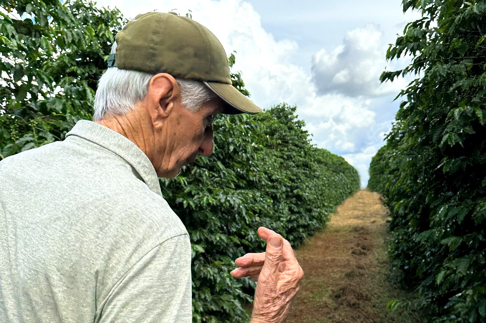
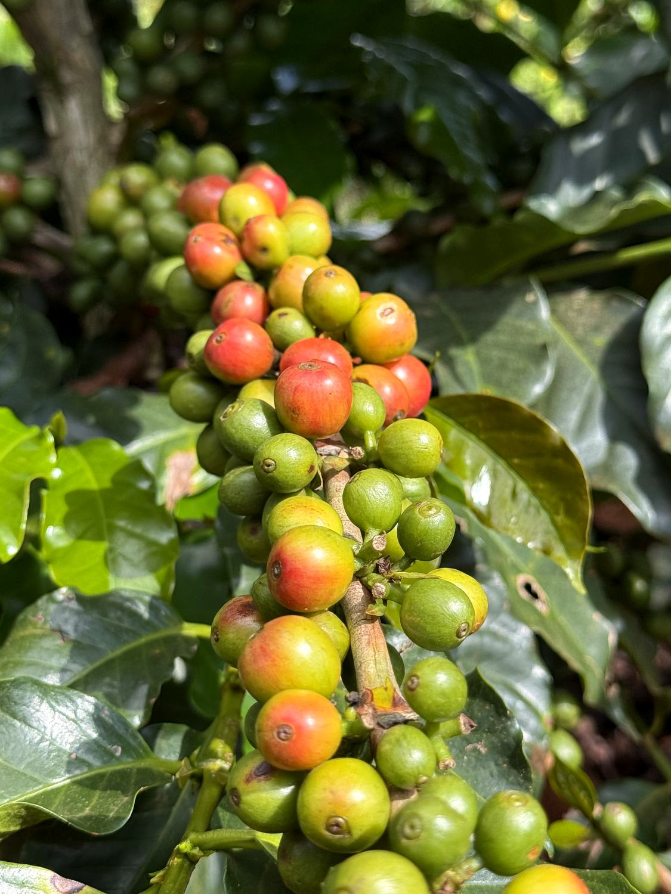
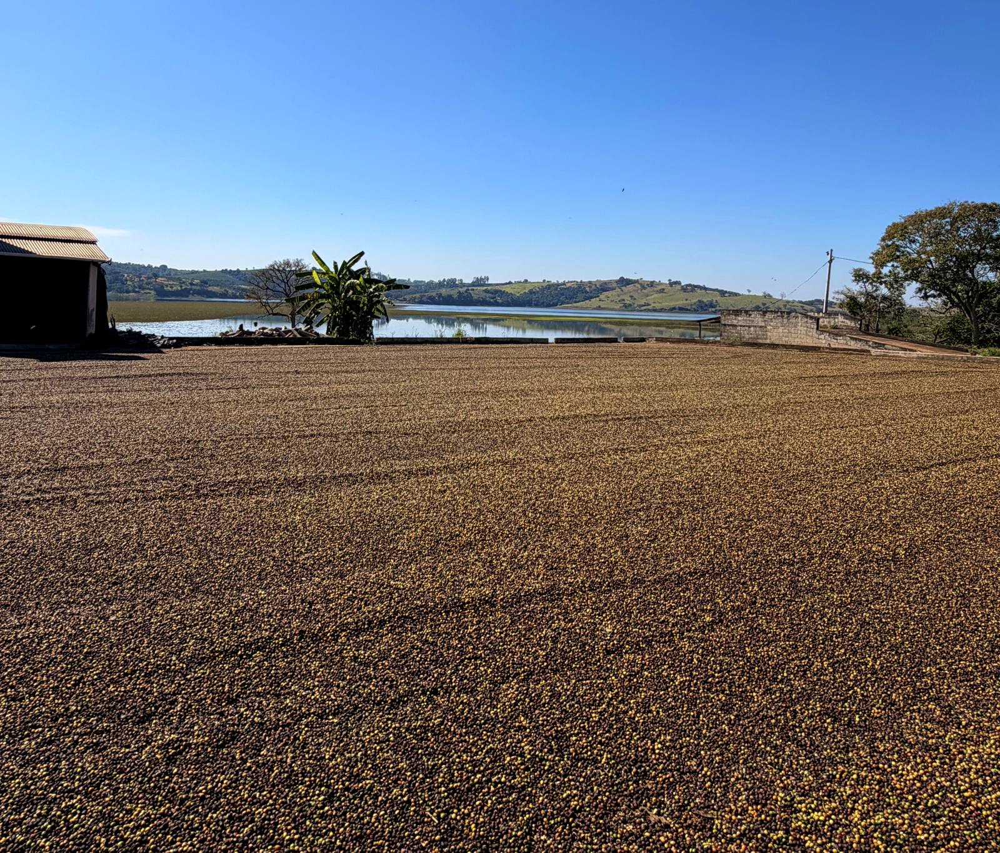
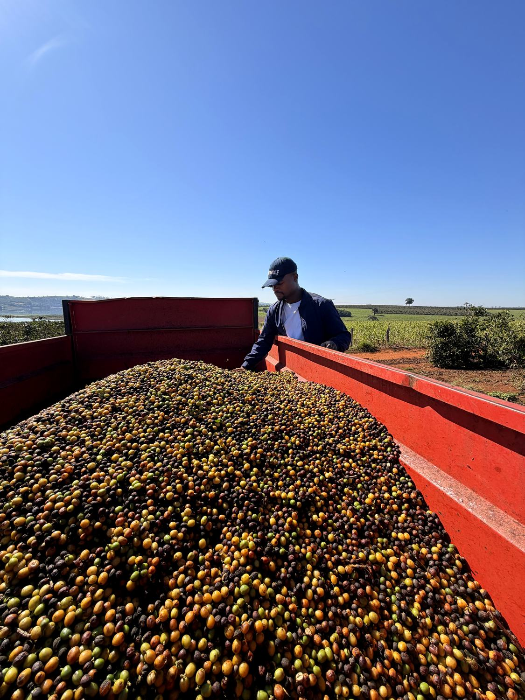

We help international buyers source Arabica coffee from Sul de Minas, in the largest Arabica-producing region in the world. Commercial to specialty, with professional export execution.
Olga Mae is based in Minas Gerais. We are coffee producers ourselves, and we work across Sul de Minas to source Arabica that matches what international buyers actually require: by profile, by grade, by volume.
We coordinate the sourcing process at origin. Experienced export partners execute the logistics, documentation and shipping. Buyers get access to a broad portfolio of Brazilian coffees, with a professional export process behind every shipment.
"We know the region, we know the producers, and we know what buyers need. That is the work."

Minas Gerais is the largest producer of Arabica coffee in the world, and Sul de Minas sits at its centre. Climate, soil and generations of production knowledge make it one of the most consistent and respected origins in the trade.
Every buyer has a different specification. We work across grades, processing methods and cup profiles, and build the lot around what you need rather than what we happen to hold.
Consistent, blend-ready lots for roasters working at volume.
A step up in cup quality and screen consistency for signature blends.
Higher-scoring lots for roasters building a specialty programme.
Natural, washed and honey, depending on the profile you are after.
From classic chocolate and nut through to sweeter, fruit-forward lots.
From a single container to a recurring seasonal programme.
Send us the specification and we will source against it.
Available on request. Cup before you commit to anything.
We are in the producing region, not trading from a warehouse abroad.
We know the producers and the region, so supply holds up season to season.
Access across grades, processes and cup characteristics.
Documentation, logistics and shipping executed by experienced partners.
Every lot documented: region, harvest, processing method.
Cup before you commit. We would rather you were sure.
Built for repeat programmes, not one-off transactions.
Direct answers, quickly, in your language and on your terms.
A clear sequence, with no surprises. You know what happens at each stage and what is expected of both sides.
Grade, cup profile, processing method, volume and destination port.
We match your specification against available lots and come back with a firm offer.
We ship samples for cupping. Nothing moves until you have approved the coffee.
Quantity, price, incoterms and payment agreed in writing before shipment.
Export documentation and logistics handled by our partners, with tracking shared throughout.
Sul de Minas, during harvest and processing.



Original photography from the region, added through the season.
Send us your specification (grade, profile, volume and destination) and we will come back with an offer. Samples are available before any commitment.
"We answer every enquiry directly and professionally, usually within a few hours."